La climatisation automobile régule la température et l'hygrométrie de l'habitacle. Ce module interactif couvre le circuit frigorifique, les réfrigérants, les propriétés physiques et les spécificités des véhicules électriques.
Rôle du système
Fonction principale
Réguler la température et l'hygrométrie de l'habitacle selon la demande du conducteur et la T° extérieure
⚡Test intermédiaire — états, pressions, températures du circuit
▶Schémas boucle standard + montage Harrison
🎯Exercice T°/Pression/État — placer les valeurs dans le circuit
⚡Spécificités véhicule électrique — pompe à chaleur, 3 modes
Chapitre 02 — Composants
Éléments du circuit
Vue d'ensemble
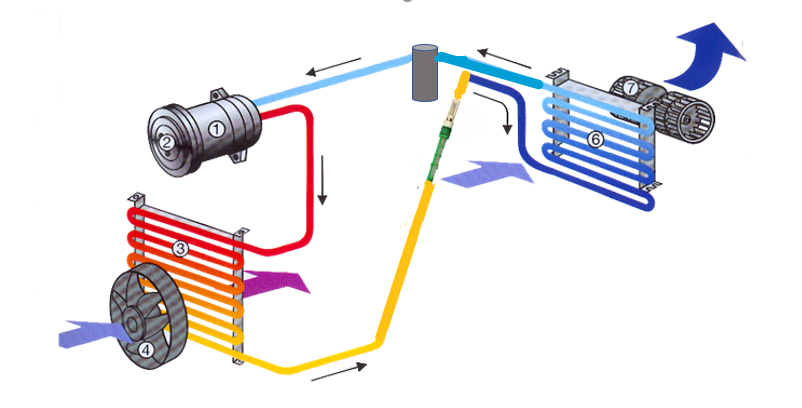
Circuit de climatisation — schéma coloré avec les 7 composants numérotés dans leur disposition sur le véhicule (rouge = HP chaud, bleu = BP froid, jaune = détente)
Les 7 composants
⚙️
① Compresseur
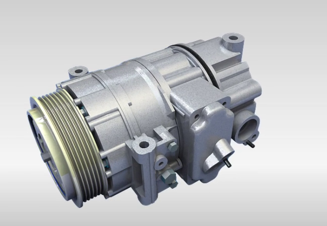
RôleAspire le gaz BP (froid/évaporateur) et le comprime en HP vers le condenseur. C'est le cœur de la boucle — entraîné par la courroie moteur.
HPGazeuxChaud +60°C
🌡️
② Condenseur
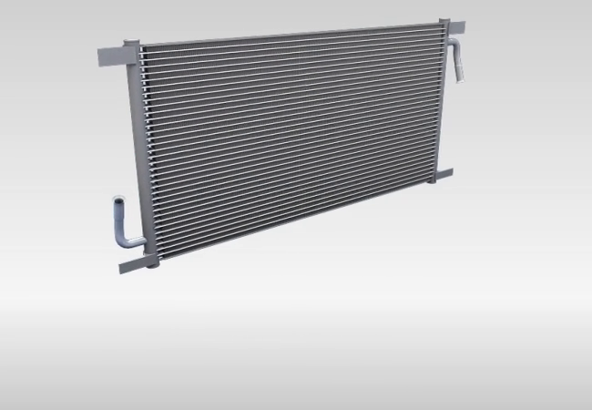
RôleRefroidit le gaz HP en le condensant (gaz → liquide). La chaleur est évacuée vers l'extérieur. Situé devant le radiateur du moteur.
HPLiquideTiède +45°C
💨
③ Ventilateur de condenseur
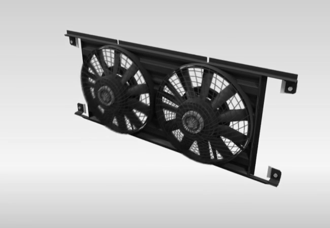
RôleForce le passage d'air sur le condenseur pour améliorer les échanges thermiques, surtout à l'arrêt ou à faible vitesse du véhicule.
🧹
④ Filtre déshydrateur
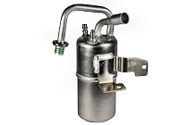
RôleFiltre les impuretés et absorbe l'humidité (eau) qui gèlerait dans le détendeur. À remplacer à chaque ouverture du circuit.
HPLiquide
🔧
⑤ Détendeur (orifice calibré)
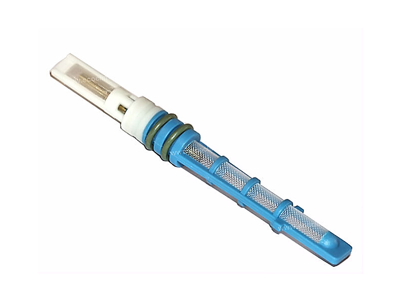
RôleChute de pression brutale → le liquide HP devient diphasique (liquide + gaz) BP à très basse température. Régule le débit selon la charge.
BPDiphasiqueFroid −15°C
❄️
⑥ Évaporateur
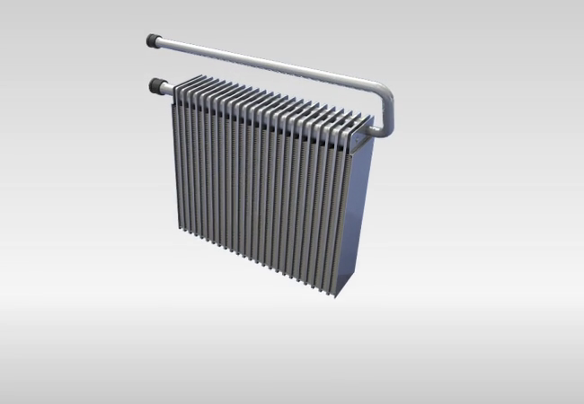
RôleLe fluide s'évapore en absorbant la chaleur de l'air habitacle → l'air est refroidi et déshumidifié. Situé dans le boîtier de chauffage/clim.
BPGazeuxFroid +2°C sortie air
🌀
⑦ Pulseur d'air habitacle
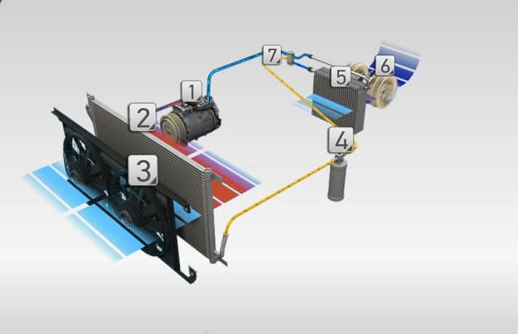
RôleFait circuler l'air de l'habitacle à travers l'évaporateur pour le refroidir, puis le distribue dans l'habitacle via les bouches d'aération.
Chapitre 03 — Réfrigérants
Les réfrigérants
Désig.
Famille
Ébullition
PRG
ODP
Application
R12
CFC ChloroFluoroCarbone
−29,8°C
10 900
1
Interdit 1995
R134a
HFC HydroFluoroCarbone
−26,3°C
1 430
0
Circuit origine · R12 reconverti
R1234yf
HFO HydroFluoroOléfine
−29,4°C
4
0
Nouveau standard
R744
CO₂ — Dioxyde de carbone
−79°C
1
0
VE / circuits haute pression
⚠️
Interdiction absolue de mélangeNe jamais mélanger deux réfrigérants différents. Chaque véhicule utilise le réfrigérant spécifié sur sa plaque constructeur. Risque de dommages circuit irréversibles.
💡
PRG — Potentiel de Réchauffement GlobalMesure l'impact climatique sur 100 ans vs CO₂ (PRG=1). Le R1234yf (PRG=4) remplace progressivement le R134a (PRG=1430) sur tous les véhicules neufs depuis 2017.
États du réfrigérant dans le circuit
💧
Liquide
Côté HP sortie condenseur
💨
Gazeux
Sortie compresseur et évaporateur
🌫️
Diphasique
Après détendeur — 2 phases
🧊
Solide
Jamais en fonctionnement normal
Test intermédiaire ⚡
Test intermédiaire
⚡
Testez vos connaissances
Cochez toutes les réponses correctes pour chaque question puis validez.
Question 1 / 3
Quels sont les différents états dans lesquels on peut trouver le réfrigérant dans un circuit de climatisation en fonctionnement ?
Question 2 / 3
Quelles pressions peut-on trouver dans un circuit de climatisation R134a en fonctionnement normal ?
Question 3 / 3
Quelles températures peut-on trouver dans la boucle de froid d'un circuit de climatisation ?
0/3
Chapitre 04 — Schémas
La boucle de froid
Montage standard — circuit complet
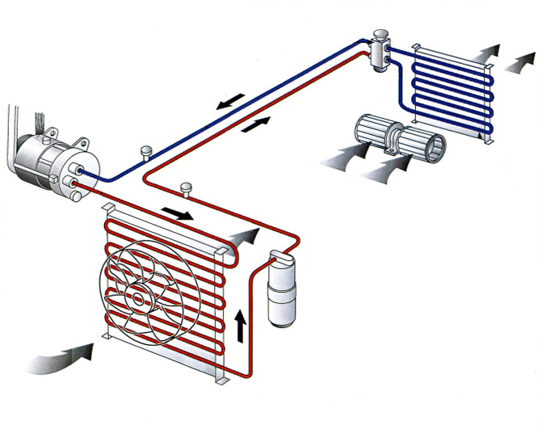
Circuit standard — rouge = HP chaud, bleu = BP froid. Compresseur → Condenseur → Filtre déshydrateur → Détendeur → Évaporateur → Compresseur.
HPHaute P.
BPBasse P.
LLiquide
GGazeux
CChaud
TTiède
FFroid
Montage Harrison — variante
Standard : Bouteille filtre déshydratante + Détendeur (côté HP)
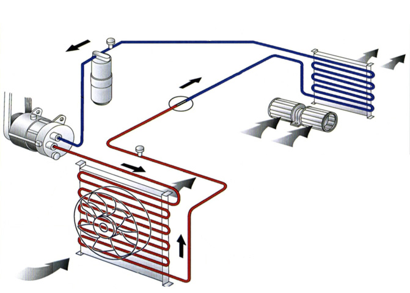
Harrison : Accumulateur + Orifice calibré (côté BP — avant l'évaporateur)
🔄
Différence clé Harrison vs StandardStandard : le filtre déshydrateur et le détendeur sont côté HP (après condenseur). Harrison : l'accumulateur et l'orifice calibré sont côté BP (avant l'évaporateur). Résultat : le réfrigérant entre dans l'évaporateur à l'état liquide dans les deux cas.
Exercice interactif 🎯
Exercice T° / P / État
Pour chaque zone du circuit, sélectionnez la pression, la température et l'état du réfrigérant. Validez ensuite pour voir vos résultats.
Référez-vous au circuit numéroté — les 4 zones correspondent aux sorties des composants principaux
Remplissez les valeurs pour chaque zone du circuit
Zone A — Sortie compresseur
Zone B — Sortie condenseur
Zone C — Sortie détendeur
Zone D — Sortie évaporateur
Chapitre 05 — Physique
Propriétés physiques
⚗️
Principe fondamentalÀ quantité suffisante, la pression d'un fluide frigorigène est directement liée à sa température de saturation. Mesurer la pression = connaître la température du fluide à cet endroit.
Tableau Pression / Température de saturation
T° (°C)
R134a (bar)
R1234yf (bar)
R744/CO₂ (bar)
−30
−0,16
0
14,27
−20
0,32
0,52
19,70
−10
1,00
1,20
—
0
1,92
2,14
34,85
+10
3,13
3,36
45,02
+20
4,70
4,90
—
+30
6,57
6,82
72,14
+40
9,12
9,17
—
+50
12,11
12,01
—
+60
15,72
15,41
—
🔬
Application diagnosticSi la pression lue ne correspond pas à la température théorique → anomalie : fuite de réfrigérant, fluide souillé, présence de non-condensables (air) dans le circuit.
Températures clés de la boucle
−15°C
Évaporateur (R134a)
+2°C
Air sortie évaporateur
+60°C
Sortie compresseur
+165°C
Max compresseur (défaut)
Chapitre 06 — VE / Hybride
Climatisation véhicule électrique
Les véhicules électriques et hybrides utilisent un circuit de climatisation réversible (pompe à chaleur) avec des électrovannes pour piloter le flux réfrigérant selon 3 modes distincts.
🔋
Spécificités VELe compresseur est électrique à spirale (entraîné par la batterie, non par la courroie moteur). Présence d'un accumulateur, d'électrovannes (A, B, C, D) et d'un échangeur batterie supplémentaire.
Schéma du circuit VE — 3 modes
❄️ Mode froid maxi
🔥 Mode PAC (chaud maxi)
🔋 Refroidissement batterie
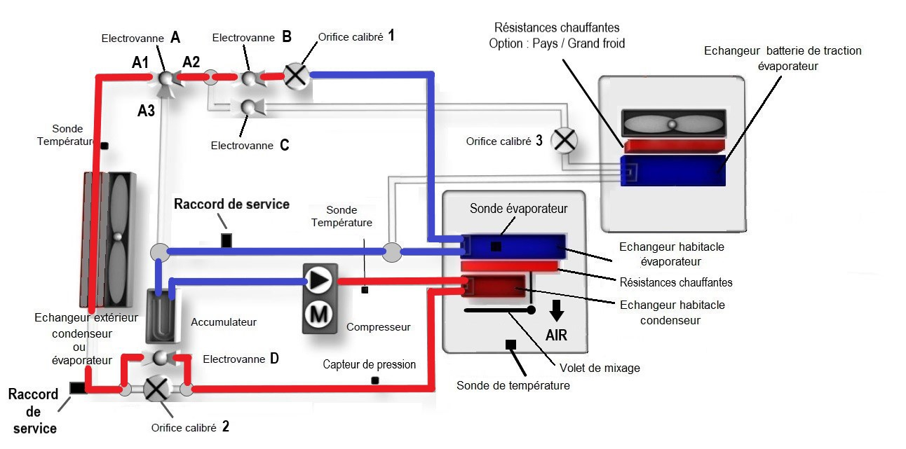
Mode froid maxi — fonctionnement classique comme un circuit thermique standard
État des électrovannes
EV AA1→A2 (repos)
EV BOuverte (repos)
EV CFermée (alimentée)
EV DOuverte (repos)
L'échangeur externe est condenseur — le fluide sort liquide. L'orifice calibré 1 détend le fluide → l'évaporateur habitacle refroidit l'air.
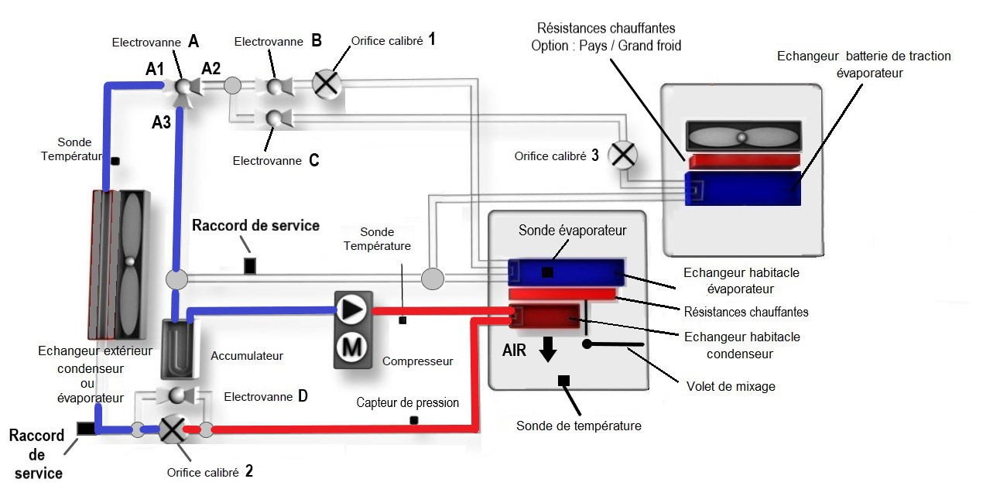
Mode PAC (pompe à chaleur) — l'échangeur habitacle devient condenseur → air chaud dans l'habitacle
État des électrovannes
EV AA1→A3 (alimentée)
EV BFermée (alimentée)
EV CFermée (alimentée)
EV DFermée (alimentée)
L'échangeur habitacle est condenseur → air chaud. L'échangeur externe est évaporateur. Le fluide passe par l'accumulateur avant le compresseur.
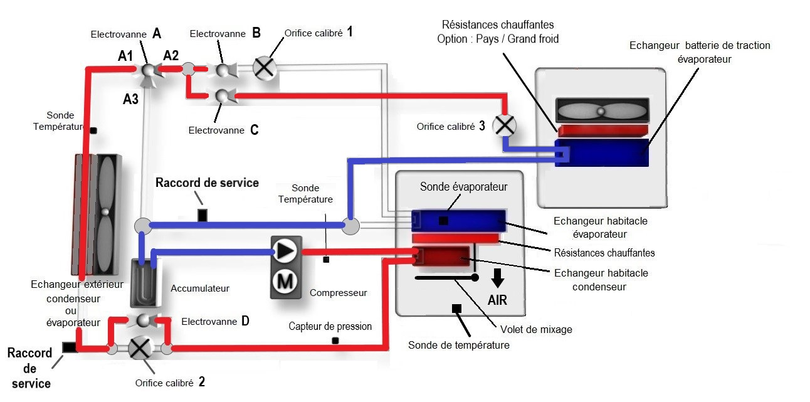
Mode refroidissement batterie — l'évaporateur habitacle est condamné, le froid est dirigé vers l'échangeur batterie
État des électrovannes
EV AA1→A2 (repos)
EV BFermée (alimentée)
EV COuverte (repos)
EV DOuverte (repos)
EV B fermée = évaporateur habitacle condamné. EV C ouverte = orifice calibré C actif → échangeur batterie. L'air vers la batterie est froid. Protège la batterie lors de charges rapides ou forte chaleur.
Chapitre 07 — Sécurité
Règles d'hygiène & sécurité
🧤
EPI obligatoires — RISQUE DE GELUREGants cryogéniques + lunettes de protection lors de toute manipulation de fluide frigorigène. Le réfrigérant liquide à −26°C provoque des brûlures par le froid au contact de la peau.
Règles obligatoires
Travailler dans un local ventilé
Ne pas fumer à proximité d'un fluide frigorigène
Ne pas surchauffer anormalement le fluide (bouteille, flexible)
Stocker les bouteilles à moins de 50°C
Ne jamais vidanger volontairement dans l'atmosphère
Ne pas démonter un circuit contenant encore du fluide
Ne jamais mélanger des fluides différents
Porter gants et lunettes au branchement/débranchement station
Utilités de la station de recharge
✓Démonter en sécurité et éviter de polluer l'atmosphère
✓Recharger aux préconisations constructeur
✓Éliminer l'humidité par tirage au vide
✓Injecter huile + traceur UV selon préco constructeur
Chapitre 08 — Révision
Flashcards — mémorisation
Cliquez sur chaque carte pour révéler la réponse. Maîtrisez toutes les cartes avant le QCM.
Rôle du compresseur ?
Cliquez pour révéler
Aspirer le gaz BP et le comprimer en HP
Cœur de la boucle — entraîné par la courroie moteur (ou moteur électrique sur VE).
PRG le plus faible parmi les réfrigérants courants ?